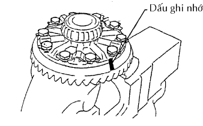

CỤM VỎ BỘ VI SAI SAU > THÁO RỜI |
| 1. CỐ ĐỊNH VỎ BỘ VI SAI SAU |
| 2. KIỂM TRA ĐỘ ĐẢO CỦA BÍCH NỐI BÁNH RĂNG QUẢ DỨA |
 |
Dùng một đồng hồ so, đo độ đảo của bích nối theo phương thẳng đứng và nằm ngang.
| Độ đả | Điều kiện tiêu chuẩn |
| Độ đả | 0.10 mm (0.0039 in.) |
| Độ đảo ngang | 0.10 mm (0.0039 in.) |
| 3. KIỂM TRA ĐỘ ĐẢO CỦA BÁNH RĂNG VÀNH CHẬU |
 |
Dùng đồng hồ so, kiểm tra độ đảo của bánh răng vành chậu.
| 4. KIỂM TRA KHE HỞ ĂN KHỚP BÁNH RĂNG VÀNH CHẬU |
 |
Dùng đồng hồ so, kiểm tra khe hở ăn khớp của bánh răng vành chậu.
| 5. KIỂM TRA TẢI TRỌNG BAN ĐẦU CỦA BÁNH RĂNG QUẢ DỨA VI SAI |
 |
Dùng cờlê cân lực, đo khe hở ăn khớp giữa bánh răng quả dứa và bánh răng vành chậu.
| 6. KIỂM TRA TỔNG TẢI TRONG BAN ĐẦU |
|
Dùng cờlê cân lực, đo tải trọng ban đầu với răng của bánh răng quả dứa và bánh răng vành chậu đang tiếp xúc.
Dùng cân lực, tổng tải trọng ban đầu.
| 7. THÁO ĐAI ỐC HÃM BÁNH RĂNG QUẢ DỨA |
Dùng SST và búa, mở khoá hãm của đai ốc.
Dùng SST giữ bích nối, tháo đai ốc.
| 8. THÁO MẶT BÍCH NỐI CỦA BÁNH RĂNG QUẢ DỨA |
Dùng SST, tháo bích nối.
| 9. THÁO CHẮN BỤI CỦA BỘ VI SAI SAU |
Dùng SST và máy ép, ép chắn bụi ra.
| 10. THÁO PHỚT DẦU BỘ VI SAI SAU |
Dùng SST, tháo phớt dầu ra khỏi vỏ bộ vi sai.
| 11. THÁO BỘ VĂNG DẦU BÁNH RĂNG QUẢ DỨA VI SAI SAU |
| 12. THÁO VÒNG BI ĐŨA CÔN PHÍA TRƯỚC BÁNH RĂNG QUẢ DỨA |
Dùng SST, tháo vòng bi (bên trong) ra khỏi bánh răng quả dứa.
| 13. THÁO KHOÁ HÃM ĐAI ỐC ĐIỀU CHỈNH VÒNG BI BỘ VI SAI SAU |
Tháo 2 bu lông và 2 hãm đai ốc điều chỉnh.
| 14. THÁO CỤM HỘP VI SAI |
 |
Đánh các dấu ghi nhớ trên nắp vòng bi và vỏ bộ vi sai.
Tháo 4 bu lông và 2 nắp vòng bi bộ vi sai.
Tháo 2 đai ốc điêu chỉnh.
 |
Tháo hộp vi sai cùng với 2 vòng bi ra khỏi vỏ vi sai.
Tháo 2 vòng bi hộp vi sai (bên ngoài) ra khỏi hộp vi sai.
| 15. THÁO BÁNH RĂNG QUẢ DỨA VI SAI |
Tháo bánh răng quả dứa và bạc cách ra khỏi vỏ bộ vi sai.
| 16. THÁO VÒNG BI ĐŨA CÔN PHÍA SAU BÁNH RĂNG QUẢ DỨA |
Dùng SST và máy ép, ép vòng bi đũa (bên trong) ra khỏi bánh răng quả dứa.
| 17. THÁO TẤM ĐỆM BÁNH RĂNG QUẢ DỨA VI SAI SAU |
| 18. THÁO VÒNG BI ĐŨA CÔN PHÍA TRƯỚC BÁNH RĂNG QUẢ DỨA |
Dùng SST, tháo vòng bi đũa (bên ngoài) ra khỏi vỏ vi sai.
Dùng thanh đồng và một búa, đóng vành chứa dầu ra khỏi vỏ vi sai.
| 19. THÁO VÒNG BI ĐŨA CÔN PHÍA SAU BÁNH RĂNG QUẢ DỨA |
Dùng một thanh đồng và búa, đóng vòng bi đũa côn (bên ngoài) ra khỏi vỏ bộ vi sai.
| 20. THÁO BÁNH RĂNG VÀNH CHẬU VI SAI |
|  |
Đánh các dấu ghi nhớ lên bánh răng vành chậu và hộp vi sai.
Dùng một tô vít và một búa, nạy các tấm hãm ra.
Tháo 10 bu lông bắt bánh răng vành chậu và 5 tấm hãm.
 |
Dùng một búa nhựa, gõ lên bánh răng vành chậu để tách nó ra khỏi hộp vi sai.
| 21. KIỂM TRA ĐỘ ĐẢO CỦA HỘP VI SAI |
Lắp vòng bi hộp vi sai vào hộp vi sai.
Lắp hộp vi sai vào vỏ bộ vi sai.
Lắp 2 nắp vòng bi vào vỏ bộ vi sai bằng 4 bu lông.
Kiểm tra độ đảo của hộp vi sai.
Tháo hộp vi sai.
Tháo vòng bi của vỏ bộ vi sai sau.
| 22. THÁO VÒNG BI HỘP VI SAI |
Dùng SST, tháo 2 vòng bi hộp vi sai (bên trong) ra khỏi hộp vi sai.
| 23. THÁO HỘP VI SAI |
 |
Dùng một đục và búa, mở khoá hãm hộp vi sai.
Dùng đột chốt và một búa, đóng chốt thẳng vào.
 |
Tháo các chi tiết sau đây ra khỏi hộp vi sai.
| 24. KIỂM TRA BÁNH RĂNG VI SAI VÀ BÁNH RĂNG BÁN TRỤC |
Kiểm tra rằng bánh răng vi sai và bánh răng bán trục không bị hỏng.
| 25. KIỂM TRA HỘP VI SAI |
Kiểm tra rằng hộp vi sai không bị hư hỏng.